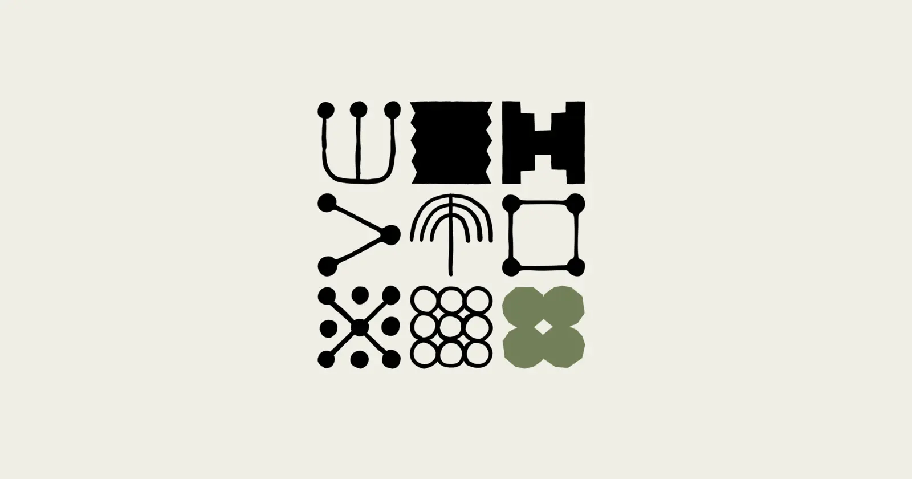
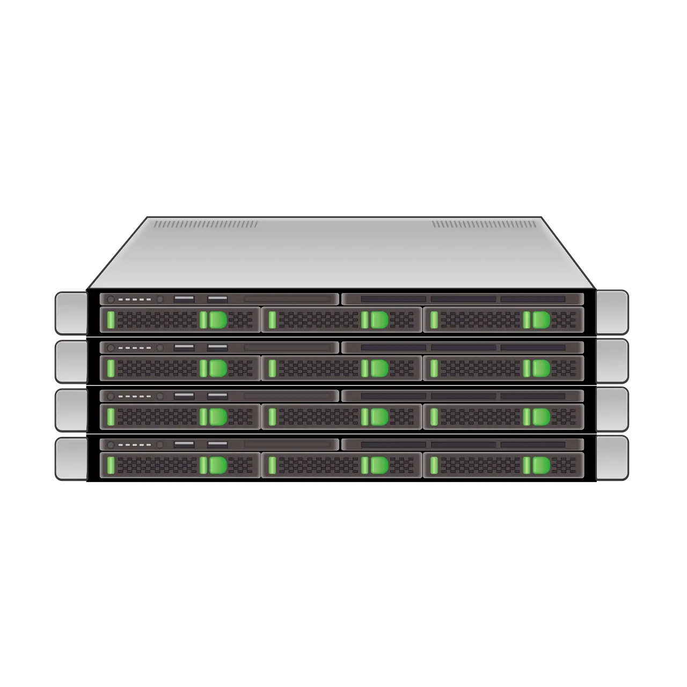
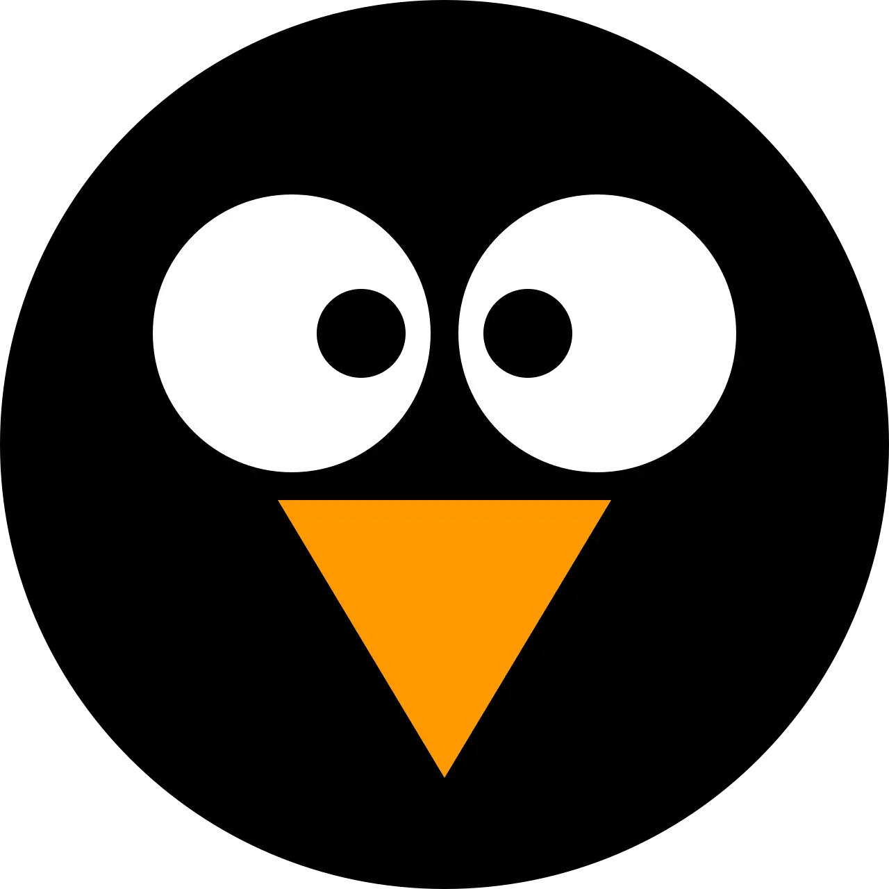

Containment stack for an
agentic coding CLI
- Build two setups, not one. One hardened daily driver, one disposable guest. Every attempt to make a single configuration serve both ends up either unusable or uncontained.
- Nothing enforced inside the agent's process is a boundary. Anthropic's docs say it outright — permission rules are enforced by Claude Code, not by the model [1] — and the Bash parser is "a permission gate, not a sandbox" [2].
- Rank containment by what actually caused losses: stop writes outside the workspace, then stop arbitrary egress, then stop reads of
~/.sshand~/.aws— in that order. - Two controls survive every permission mode, including
bypassPermissions: apermissions.denyrule and aPreToolUsehook returningdeny[15][7]. Configure both — as blast-radius reduction, not as the boundary.
settings.jsoncurl was downgraded to a prompt by padding the command past a 50-subcommand parser cap [3][45]; deny rules went unenforced through symlinks (CVE-2026-25725) [4] and through the @../ attachment syntax [47]. Still worth writing — it stops the honest mistakes, which are most of them.permissions.deny + PreToolUse hook--dangerously-skip-permissions [15][7]. Use the hook to deny what the built-in parser misses: sudo, loader indirection via ld-linux, /proc/self/root path identity, environment runners like devbox run, and any attempt to set dangerouslyDisableSandbox. Still the same process — a compromised hook file is a compromised gate, so deny writes to it.sandbox.enabled: true and allowUnsandboxedCommands: false [8]. Two things to know: it restricts writes and network but permits reading the whole filesystem with no credential deny list by default, and it does not cover Read/Edit, hooks or MCP servers [14]. It has been escaped via symlink once already (CVE-2026-39861, CVSS 7.7) [5].bwrap wrapperclaude process treeclaude-jail script closes L2's gap: hooks, MCP servers and the built-in Read/Edit tools land inside the same filesystem view. Or let Anthropic maintain the wrapper — npx @anthropic-ai/sandbox-runtime ⭐ 4.8k. The price of admission is an unprivileged user namespace, which widens reachable kernel surface — see the substrate note below.--internal network--userns=keep-id, the repo as the only bind mount, and egress through a proxy sidecar on an internal network. Not the NET_ADMIN-plus-iptables pattern of Anthropic's reference devcontainer, which allows unrestricted outbound DNS, allowlists all of GitHub's CIDR space, and hands the agent's own container CAP_NET_ADMIN [13][27]. Rootless Docker is a dead end: it maps your UID to container root, and the CLI refuses --dangerously-skip-permissions as root [28].Assembly A · daily driver
PreToolUse hard-deny hookfailIfUnavailable: trueclaude-jail wrapper or sandbox-runtimeAssembly B · untrusted & unattended
--dangerously-skip-permissions · overnight runsbase snapshot taken right after provisioning and roll back to it, never to yesterday's mess.| Option | Why it fails here | Ref |
|---|---|---|
| LXC container on Proxmox | Shares the host kernel; Proxmox's own docs prefer full VMs for isolation, and LXC upstream states privileged containers cannot be root-safe. | [18] [19] |
| firejail ⭐ 7.6k | setuid-root by design, with a matching CVE history. You do not add a setuid-root binary to reduce the blast radius of a coding agent. | [86] [87] |
systemd-run --user |
Its strongest hardening directives are documented as applying to system services only, so the user-scope version buys much less than it appears to. | [25] |
| Flatpak | Wrong shape for a dev CLI, and roughly 42% of published apps neuter their own sandbox with broad filesystem permissions. | [26] [85] |
| Rootless Docker | Maps your UID to container root; Claude Code then refuses --dangerously-skip-permissions as root, so the one thing you wanted the container for stops working. |
[28] [73] |
| Anthropic's reference devcontainer, as shipped | Good shape, weak boundary: unrestricted outbound DNS, all of GitHub's CIDR space allowlisted, CAP_NET_ADMIN granted to the agent container. Keep the shape, replace the firewall with a proxy sidecar. |
[13] [74] |
| Hand-rolled Landlock | The right primitive to bet on long-term, wrong thing to write yourself today — let bubblewrap and the tools built on it carry it. | [41] [76] |
The built-in sandbox restricts writes and network but permits reading the whole filesystem, with no credential deny list [8]. So ~/.ssh and ~/.aws are in scope unless you list them — and 2026's npm stealers name ~/.claude/.credentials.json explicitly [9]. On Linux the keyring is not a mitigation: once the login collection is unlocked, any process running as you reads every secret over D-Bus [10][38]. Encrypting at rest changes nothing; changing what the credential is does.
Default AppArmor forbids bubblewrap from creating user namespaces, and a sandbox that fails to start degrades to unsandboxed execution with a warning [8][42]. Set sandbox.failIfUnavailable: true and install a bwrap AppArmor profile, or the whole local story is theatre — a specific trap for anyone arriving from WSL2, where none of this applied.
preinstall scripts run before any agent permission check, and observed malware re-invokes an installed agent CLI with --dangerously-skip-permissions as a credential-hunting tool [11][69]. The build needs the same boundary as the agent — the strongest single argument for L5.
// L0 + L1 + L2 in one file { "permissions": { "defaultMode": "default", "disableBypassPermissionsMode": "disable", "deny": [ "Read(//**/.env)", "Read(//**/.env.*)", "Read(~/.ssh/**)", "Read(~/.aws/**)", "Read(~/.gnupg/**)", "Read(~/.kube/**)", "Read(~/.config/gh/**)", "Read(~/.claude/.credentials.json)", "Edit(~/.claude/hooks/**)", "Edit(//**/.git/hooks/**)", "Bash(sudo *)", "Bash(git reset --hard*)", "Bash(git push --force*)" ] }, "sandbox": { "enabled": true, "failIfUnavailable": true, // keynote 2 "allowUnsandboxedCommands": false, "autoAllowBashIfSandboxed": true, "network": { "strictAllowlist": true, "allowedDomains": ["api.anthropic.com", "registry.npmjs.org", "*.github.com"] }, "filesystem": { "denyRead": ["~/.ssh", "~/.aws", "~/.gnupg", "~/.config/gh"] } } }
#!/usr/bin/env bash # refuse to run if the kernel won't give us a userns bwrap --unshare-user --dev /dev true 2>/dev/null || exit 1 exec bwrap \ --unshare-all --share-net --die-with-parent \ --hostname claude-jail \ --clearenv --setenv HOME "$HOME" \ --setenv PATH /usr/local/bin:/usr/bin:/bin \ --setenv TERM "${TERM:-xterm-256color}" \ --proc /proc --dev /dev --tmpfs /tmp --tmpfs /run \ --ro-bind /usr /usr --symlink usr/bin /bin \ --ro-bind /etc/ssl /etc/ssl \ --ro-bind "$(readlink -f /etc/resolv.conf)" /etc/resolv.conf \ --bind "$HOME/.claude" "$HOME/.claude" \ --bind "$PROJECT" "$PROJECT" --chdir "$PROJECT" \ --cap-drop ALL \ claude "$@" # Ubuntu 24.04+: without this profile, bwrap cannot # create a user namespace at all. sudo tee /etc/apparmor.d/bwrap <<'EOF' abi <abi/4.0>, include <tunables/global> profile bwrap /usr/bin/bwrap flags=(unconfined) { userns, } EOF sudo systemctl reload apparmor
# enforced host-side as iptables — the guest # cannot switch this off from inside [OPTIONS] enable: 1 policy_in: DROP policy_out: DROP [RULES] # in: only your workstation, only ssh (+ mosh) IN ACCEPT -p tcp -dport 22 -source 192.168.1.50 IN ACCEPT -p udp -dport 60000:61000 -source 192.168.1.50 # out: the internet, never the LAN or the host OUT ACCEPT -p udp -dport 53 -dest 192.168.1.1 OUT REJECT -dest 192.168.1.0/24 OUT REJECT -dest 10.0.0.0/8 OUT REJECT -dest 172.16.0.0/12 OUT ACCEPT -p tcp -dport 443 OUT ACCEPT -p tcp -dport 22 -dest +forges
# clean baseline, right after provisioning. # never delete this one. qm snapshot 210 base --description "clean toolchain" # pre-flight before an unattended run qm snapshot 210 "pre-$(date +%Y%m%d-%H%M)" # undo — seconds, on ZFS or LVM-thin qm rollback 210 base --start # disk-only: omit --vmstate. RAM snapshots cost # minutes and buy nothing you want here. qm listsnapshot 210 qm delsnapshot 210 pre-20260730-0900 # the guest's only credential: a read-only # deploy key, scoped to one repository ssh-keygen -t ed25519 -f ~/.ssh/deploy_myrepo -N "" git clone git@github.com:me/myrepo.git ~/src/myrepo
| Ref | Mechanism | Effect | Layer | Source |
|---|---|---|---|---|
| CVE-2026-25725 | Deny rules unenforced through symlinks | Denied path readable | L0 | [4] |
| CVE-2026-39861 | Sandbox escaped via symlink · CVSS 7.7 | Write outside the sandbox | L2 | [5] |
| Parser cap | Command padded past a 50-subcommand limit | Denied curl downgraded to a prompt | L0 | [3] [45] |
| Loader indirection | Agent reasoned its way into disabling its own sandbox, then loaded a blocked binary through ld-linux.so | execve gate sidestepped entirely | L0 · L2 | [6] [44] |
@../ syntax | Attachment path escaped a Read deny rule | Out-of-tree file read | L0 | [47] |
| Env prefix | Deny bypassed with an environment-variable command prefix | Denied command ran | L0 | [48] |
| Subagents | Task-tool subagents ran 22+ bash commands including credential reads | Gate bypassed by delegation | L0 · L1 | [46] |
| SOCKS5 null byte | Allowlist bypass, ~130 affected releases — patched with no CVE and no changelog entry | Network allowlist defeated | L2 | [43] |
| DNS exfil | Data smuggled out over DNS requests | Egress with no HTTP | L2 · L4 | [32] |
| Devcontainer DNS | Reference firewall allows outbound UDP/53 to any resolver | DNS tunnelling out of the container | L4 | [13] |
| CVE-2026-23111 | nftables unprivileged-to-root, reachable through the user namespace bubblewrap needs | Root on the host | Substrate | [12] |
| Realized loss | Agent ran git reset --hard / git checkout unprompted | Uncommitted work permanently destroyed | All | [30] [31] [80] |
| Realized loss | npm supply-chain malware re-invokes an installed agent CLI with --dangerously-skip-permissions | Credentials swept from $HOME | All | [11] [9] |
Spec S1 · the agent's identity
$HOME is already exfiltrated. Do not try to hide the credential — change what it is.
· Git access: a FIDO2-backed SSH key — the private half cannot leave the token.
· Forge API: one fine-grained PAT, scoped to one repo [40]. In the VM, a read-only deploy key instead.
· Everything else: short-lived and injected at process start, never written to a dotfile [78].
· Not a mitigation: the GNOME keyring. Unlocked login collection = every secret readable over D-Bus by any process running as you [10].
· Keep a revocation drill, written down, rehearsed once.
Spec S2 · undo and evidence
· Real undo: git commits, plus reflog for the rest. Commit before handing the agent the keyboard.
· Real audit log: a
PostToolUse hook appending outside the repo [64] — because the agent can write to anything inside it.· Transcripts expire after 30 days [34], and
/rewind cannot undo what a bash command did, nor a subagent's edits [35].· Rehearse one restore. "A backup you have never restored from is not a backup, it is a theory" [36].
| Sheet | Title & finding | Depth | Refs | Read | Layers |
|---|---|---|---|---|---|
| 01 | Threat model and blast radius The realized 2026 losses come from the agent's own destructive git commands and from supply-chain malware that weaponizes an installed agent CLI — not from the exotic prompt-injection scenarios. Containment must stop out-of-workspace writes, egress, and credential reads, in that order. | survey | 28 | 10 min | frames all |
| 02 | Claude Code's native guardrails in 2026 Permission rules are an in-process policy layer, not a security boundary; only the bubblewrap-backed Bash sandbox has OS teeth, and it covers Bash alone — with the exact syntax, the documented holes, the CVEs, and the two controls that hold in every mode. | expedition | 40 | 26 min | L0 · L1 · L2 |
| 03 | Linux-native sandboxing on the workstation
Turn on the built-in bubblewrap sandbox, then wrap the whole process in a 30-line bwrap script. systemd-run --user, firejail and Flatpak are the wrong tools for this job, and Landlock is the primitive to bet on but not to hand-roll. |
expedition | 52 | 25 min | L2 · L3 |
| 04 | Containers as the containment layer
Rootless Podman plus a proxy-only internal network beats Anthropic's reference devcontainer; the reference firewall leaks DNS and hands the agent NET_ADMIN. |
survey | 34 | 12 min | L4 |
| 05 | Proxmox as the isolation boundary — KVM, not LXC Proxmox's own docs say containers share the host kernel and LXC upstream says privileged containers cannot be root-safe — plus the wiring, firewall rules, snapshot policy and sizing that make a dedicated agent guest actually usable. | expedition | 42 | 24 min | L5 |
| 06 | Credential isolation for an agentic coding CLI
An agent that can read $HOME holds your whole identity, and on Linux the keyring does not help — so give the agent its own short-lived, narrowly scoped credentials instead. |
survey | 32 | 11 min | spec S1 |
| 07 | Audit trail and recovery drills
Git commits are your real undo and a PostToolUse hook is your real audit log — Claude Code's own transcripts and /rewind are convenience layers that expire, miss bash, and are writable by the agent. |
recon | 12 | 3 min | spec S2 |
Nothing drawn here contains a kernel exploit, and L5 only moves the trust boundary to KVM. If your threat model includes a targeted attacker rather than opportunistic supply-chain malware, the honest answer is that the agent host should be disposable — which argues for automating VM re-provisioning rather than snapshotting one long-lived guest.


